The Spaces view provides Space and Space instance navigation, for querying data and viewing class metadata. Select a Space or press the arrow to drill down into the Space instances of each Space (cluster).
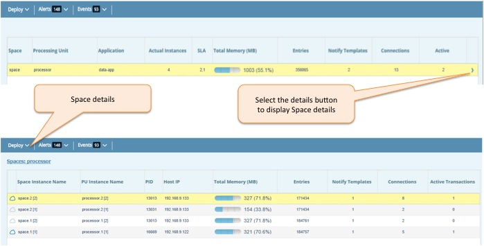
Basic selected space or space instance configuration. It has following sections: General, Memory Management, Network & Environment and optional Blob Store.
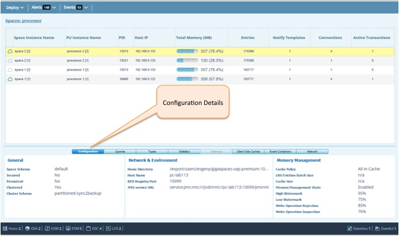
The Query editor supports SQL queries. For example, to query a specific class:
SELECT * FROM my.company.com.MyPojo WHERE rownum < 1000
In the screenshot below, we also provide the UID column of each object in the Space.
SELECT uid,* FROM com.gigaspaces.sba.trading.model.TradePojo WHERE rownum < 7
Press the "Play" icon to execute the query. Query is executed against the selected Space (cluster) or Space instance. If the query has too many results, use the paging at the bottom to move between them. Paging is static, meaning that these results are fetched once per execute request. Use the arrows - back and forward to navigate between previously executed queries.
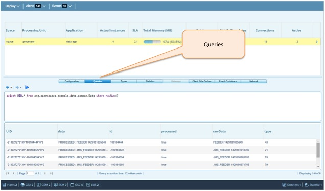
The metadata of the Types in the Space are shown by clicking on the "Types" tab. This lists all the types registered with the Space. Displayed for each type are: instance count, notify template count, Space key (index), Space routing key, and indexed fields.
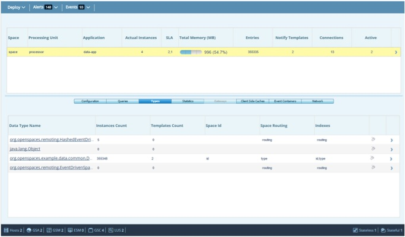
Double click on a single result set in the query results table, to show the metadata and values of each result. Object inspection shows the field name, field type, and field value. For compound fields, drill down using the arrow toggles. For array types, the array length and toString is displayed.
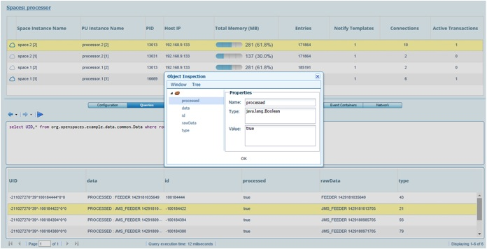
The Statistics view provides graphical representation of Space/Space instance operations performed.
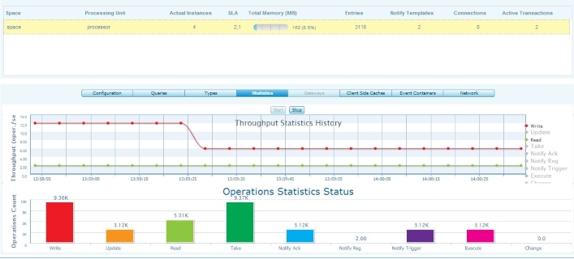
The Gateways view provides information about replication over the WAN between the selected space and target spaces.
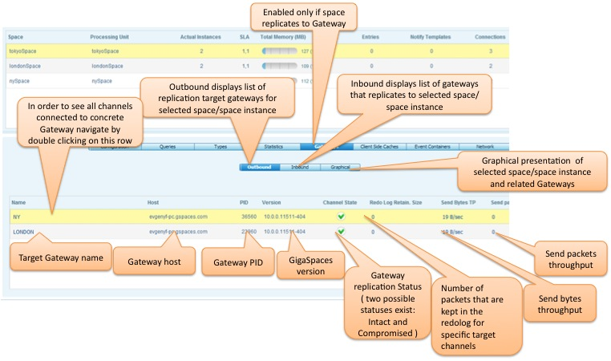
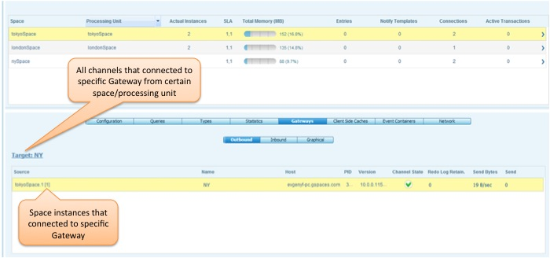
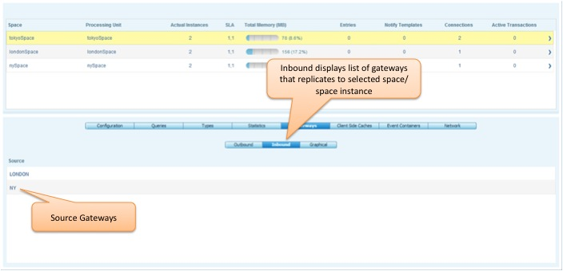
The Local Views panel provides information about client side views (Local Views) in sync with the selected space.
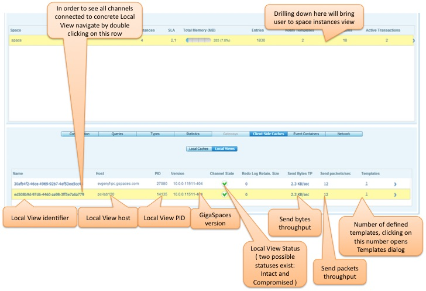
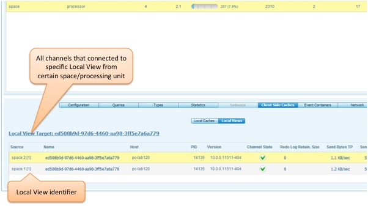
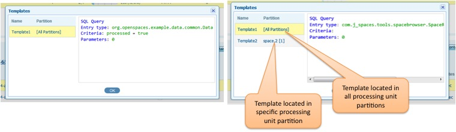
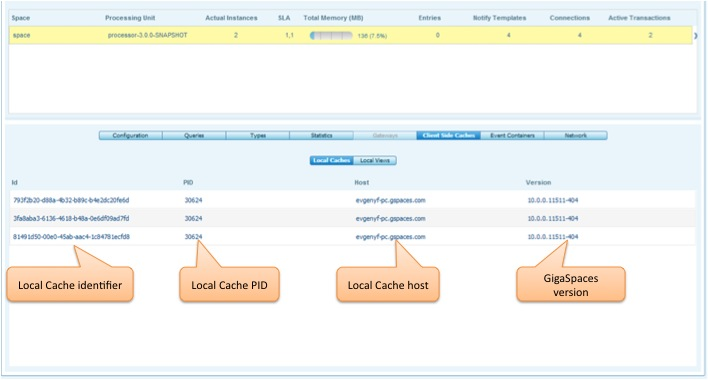
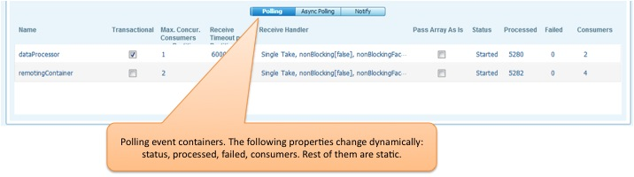
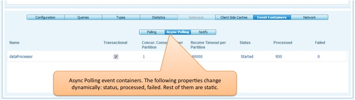
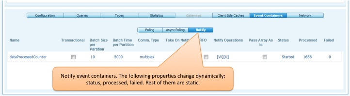
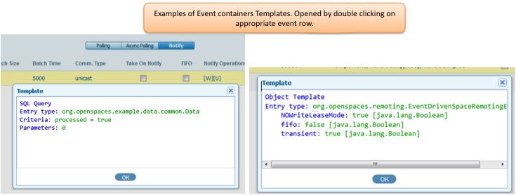
This view displays inbound remote activity generated by clients on space instances of selected above space.
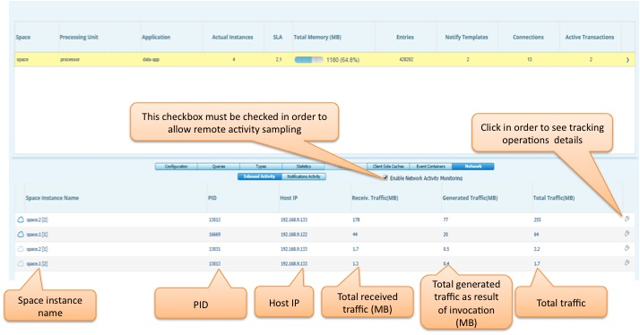
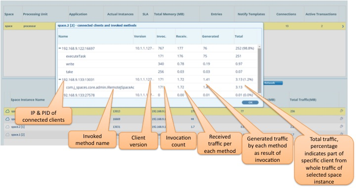
This view displays notification activity sent to clients.
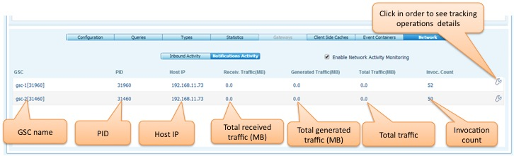
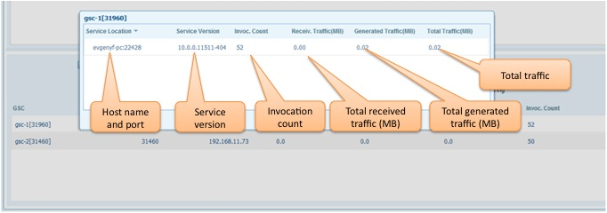